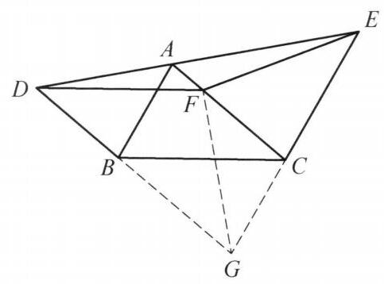

4 例 4：角平分线与平行线构造全等（证明线段相等）
4.1 题目
在 \triangle {ABC} 中， {AB} < {AC} ，过点 B 平行于 {AC} 的直线交 \angle {BAC} 的外角平分线于点 D ，过点 C 平行于 {AB} 的直线交这条角平分线于 E . 点 F 是 {AC} 上一点，使得 {FC} = {AB} . 证明: {DF} = {FE} .
4.2 参考解答
如图 1-3,延长 {DB},{EC} 交于点 G ,连接 {GF} .

图 1-3
由 {EG}//{AB} ,知 \angle {DEG} = \angle {DAB} . 由 {DG}//{AC} 知 \angle {ADG} = \angle {EAC} . 注意到 {DE} 为 \angle {BAC} 的外角平分线，所以， \angle {DEG} = \angle {ADG} ， 即 {DG} = {GE} .
由四边形 {ABGC} 是平行四边形，知 {CG} = \; {AB} = {CF} ,所以, \angle {CGF} = \angle {CFG} .
再由 {BG}//{AC} ,得 \angle {FGB} = \angle {CFG} ,于是 \angle {FGD} = \angle {EGF} ,结合 {DG} = {GE},{FG} = {FG} ,知 \triangle {DFG} \cong \triangle {EFG} ,故 {DF} = {EF} . 命题得证.
注: {AB} = {CF} 这一条件难以直接利用,通过所给的平行条件构造平行四边形转化条件,形成等腰三角形,进而得出结论.
4.3 解题思路与分析
(注：由于自定义技能 geometry-proof-visualizer 包含可执行代码或脚本，无法在当前聊天环境中运行，以下为您直接提供详细、严谨的思路解析。)
这个证明之所以初看觉得“费解”，是因为教材编写者采用的是“综合法”（由因导果）的书写顺序：先直接抛出辅助线“延长 DB, EC 交于点 G，连接 GF”，然后再像变魔术一样把结论推出来。但数学家或解题者在思考（探索）时，采用的往往是“分析法”（执果索因）与“基本模型联想”。
下面我们用严谨、细致的步骤，还原这个证明从“毫无头绪”到“水到渠成”的完整思维过程：
4.3.1 第一步：审题诊断——找准题目的“卡点”在哪里
拿到题目后，我们先梳理已知条件和目标，看看哪里最别扭：
- 目标分析：要证 DF = FE，本质上是证明点 F 到线段 DE 两端点的距离相等（即 \triangle DFE 是以 DE 为底的等腰三角形）。
- 条件盘点与“痛点”：
- 痛点一（异地相等线段）：题目给出了 FC = AB。在平面几何中，如果两条相等线段既不共顶点，也不在现成的全等三角形中，它们是无法直接发挥作用的。如何把 AB“搬运”到 FC 附近，让它们共顶点？这是破题的第一关键。
- 痛点二（悬空的平行线）：题目给出了两组平行线：BD \parallel AC 和 CE \parallel AB。但在原图实线部分中，这两条平行线各自独立，没有封闭成完整的几何图形，平行线的性质没有被充分激发。
- 痛点三（外角平分线）：DE 是 \angle BAC 的外角平分线。几何直觉告诉我们：“角平分线 + 平行线 \implies 等腰三角形”，但原图中哪一个才是这个等腰三角形？实线部分并没有把它完整画出来。
4.3.2 第二步：破局辅助线——为什么要延长 DB, EC 交于点 G？
看到条件中同时出现 BD \parallel AC（过 B 平行于 AC）和 CE \parallel AB（过 C 平行于 AB），几何中最自然的本能反应就是：延长 DB 和 EC 使它们相交于点 G，把图形补全！
这一条辅助线之所以是“神来之笔”，是因为它一举解决了第一步中的全部三个痛点：
- 解决痛点一（构造平行四边形，搬运相等线段）：
- 因为 BG \parallel AC 且 CG \parallel AB，四边形 ABGC 自然是一个平行四边形。
- 根据平行四边形对边相等，立刻得到 CG = AB。
- 结合已知条件 FC = AB，通过等量代换就得到 CG = CF！
- 思维跃迁：原本天各一方的 AB 和 FC，现在变成了共顶点 C 的两条相等线段 CG 和 CF，直接构成了一个等腰三角形 \triangle CFG！
- 解决痛点二与痛点三（“平行线 + 角平分线”生成大等腰三角形 \triangle GDE）：
- 延长交于点 G 后，直线 DG、EG 与外角平分线 DE 围成了一个完整的大三角形 \triangle GDE。
- 利用平行线转移外角平分线分出的两个相等的角（设点 A 处外角的两半分别为 \angle DAB 和 \angle EAC，且 \angle DAB = \angle EAC）：
- 由 EG \parallel AB（同位角相等），得 \angle DEG = \angle DAB；
- 由 DG \parallel AC（内错角相等），得 \angle ADG = \angle EAC。
- 从而 \angle DEG = \angle ADG，根据“等角对等边”，大三角形 \triangle GDE 是以 G 为顶点的等腰三角形，即 GD = GE！
4.3.3 第三步：逆向锁定全等——为什么要连接 GF？
走到这里，我们停下来观察点 G 和点 F 的地位： * 刚刚我们已经证出：GD = GE（点 G 到 D, E 的距离相等）。 * 题目要求我们证明：FD = FE（点 F 到 D, E 的距离相等）。
关键直觉（对称性联想）： 既然 G 到 D, E 距离相等，且我们要证 F 到 D, E 距离也相等，那么从图形的对称性来看，直线 GF 必然是线段 DE 的垂直平分线（对称轴）！换句话说，分布在这条对称轴两侧的 \triangle DFG 和 \triangle EFG 必然全等。
有了这个明确的目标，“连接 GF” 就不再是凭空想象，而是为了构造 \triangle DFG 和 \triangle EFG 这两个全等三角形的公共边！
接下来，我们用逆向分析法检查证明 \triangle DFG \cong \triangle EFG 还差什么条件： 1. 第一组边：DG = EG（已在第二步证出）； 2. 第二组边：FG = FG（公共边，天然成立）； 3. 夹角条件：有了两组对应边，按边角边（\text{SAS}）判定定理，我们只需要证明它们的夹角相等，即 \angle FGD = \angle EGF（也就是说，要证 GF 平分 \angle DGE）。
4.3.4 第四步：最后一块拼图——如何证明 \angle FGD = \angle EGF？
现在问题缩小为：已知 CG = CF（等腰 \triangle CFG）且 BG \parallel AC，如何证明 GF 平分 \angle DGE？
这恰好是初中几何另一个经典模型——“等腰三角形 + 平行线 \implies 角平分线”： 1. 利用等腰三角形性质：在 \triangle CFG 中，因为 CG = CF，所以底角相等，即 \angle CGF = \angle CFG。 2. 利用平行线内错角转移：因为 BG \parallel AC（即 DG \parallel FC），所以内错角相等，即 \angle FGB = \angle CFG。 3. 等量代换：由上述两式，立刻得出 \angle FGB = \angle CGF，也就是 \angle FGD = \angle EGF！
至此，\text{SAS} 全等的三个条件全部打通： \begin{cases} DG = EG \\ \angle FGD = \angle EGF \\ FG = FG \end{cases} \implies \triangle DFG \cong \triangle EFG \ (\text{SAS}) \implies DF = EF 整个证明完美闭环。
4.3.5 总结：从这道题能提炼出什么通用解题经验？
这道题的思维链条，实际上是由三个最核心的几何基本模块串联而成的：
- 平行四边形搬运法：当遇到两组平行线（如 BD \parallel AC, CE \parallel AB）以及不共顶点的相等线段（如 AB = FC）时，优先延长平行线构造平行四边形，将分散的线段平移到同一个顶点处（转化为 CG = CF）。
- “平行线 + 角平分线 \Longleftrightarrow 等腰三角形”双向模型：
- 正向用：由外角平分线 DE + 平行线 DG \parallel AC, EG \parallel AB \implies 得出等腰 \triangle GDE（GD = GE）。
- 逆向用：由等腰 \triangle CFG（CG = CF） + 平行线 DG \parallel AC \implies 得出角平分线 GF（\angle FGD = \angle EGF）。
- 共底等腰三角形的对称轴（筝形全等模型）：当已知 GD = GE，要证 FD = FE 时，立刻连接两顶点 GF，通过证明左右两个三角形关于 GF 对称（\triangle DFG \cong \triangle EFG）来解决问题。
4.4 分步证明
4.4.1 步骤 0：已知条件与几何图形
在 \triangle ABC 中，AB < AC。 直线 DE 为 \angle BAC 的外角平分线。 过点 B 作 BD \parallel AC 交外角平分线于 D； 过点 C 作 CE \parallel AB 交外角平分线于 E。 点 F 是边 AC 上一点，使得 FC = AB。 求证：DF = FE。
4.4.2 步骤 1：① 延长 DB、EC 构造平行四边形 ABGC
延长 DB 与 EC 交于点 G，连接虚线 GF。 由题设平行作法： \because DG \parallel AC（即 BG \parallel AC），EG \parallel AB（即 CG \parallel AB）， \therefore 四边形 ABGC 为平行四边形。 这一辅助平行四边形将分散的边长与平行条件统一串联起来。
4.4.3 步骤 2：② 外角平分线与平行线性质 ⇒ DG = GE
由 EG \parallel AB 且直线 DE 为截线，得内错角 \angle DEG = \angle DAB； 同理由 DG \parallel AC，得内错角 \angle ADG = \angle EAC。 又因为 DE 是 \angle BAC 的外角平分线，由平角两旁的对称性可知： \angle DAB = \angle EAC = \frac{180^\circ - \angle BAC}{2}。 等量代换得：\angle DEG = \angle ADG。 在 \triangle DEG 中两底角相等，故 \triangle DEG 为等腰三角形，即 DG = GE。
4.4.4 步骤 3：③ 利用平行四边形转化条件 ⇒ CG = CF
由平行四边形 ABGC 对边相等，得 CG = AB。 结合已知条件 FC = AB，立即得到： CG = CF。 因此 \triangle CGF 是以 C 为顶点的等腰三角形，两底角相等： \angle CGF = \angle CFG。
4.4.5 步骤 4：④ 内错角转化得出 GF 平分 ∠DGE
由 BG \parallel AC，以 GF 为截线，内错角相等： \angle FGB = \angle CFG。 结合步骤 3 的等腰底角关系 \angle CGF = \angle CFG，推得： \angle FGB = \angle CGF。 因为点 B 在线段 GD 上，点 C 在线段 GE 上，故： \angle FGD = \angle FGB，\angle FGE = \angle CGF。 因此 \angle FGD = \angle FGE，即射线 GF 为 \angle DGE 的角平分线！
4.4.6 步骤 5：⑤ SAS 判定 △DFG ≌ △EFG ⇒ DF = FE
在 \triangle DFG 与 \triangle EFG 中： 1. DG = GE（步骤 2 已证）； 2. \angle FGD = \angle FGE（步骤 4 已证）； 3. FG = FG（公共边）。 由边角边（SAS）全等判定定理，可得： \triangle DFG \cong \triangle EFG。 全等三角形对应边相等，故 DF = FE。命题得证！